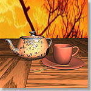
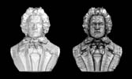
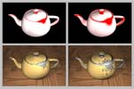

 A Geometry Dependent Texture Generation Framework for Simulating Surface Imperfections
Tien-Tsin Wong , Wai-Yin Ng and Pheng-Ann Heng ,
in Proceedings of the 8-th Eurographics Workshop on Rendering, St. Etienne, France, June 1997, pp 139-150.Abstract
- In this paper, we propose a two-step procedural texture generation framework, to model surface imperfections or weathering, which is inbetween the manual texture synthesis and the automatic physical simulation. Although the blemishes look random, the systematic and geometry dependent nature of the underlying distribution is still observable. A distribution of tendency (potential of containing blemishes) is modeled in the first step. User control and geometrical information are included in this step. In the second step, irregular blemish pattern is then generated and distributed according to the modeled tendency distribution. Three common surface imperfections, namely dust accumulation, patina and scratching, are modeled as examples. Promising images are resulted.
Download Paper
- Acrobat: perfect.pdf (size: 336 KB)
Some Images
Dusty Logo Teaset   Beethoven Growth of peeling
Related Publications
- " Simulating Dust Accumulation",
S. C. Hsu and T. T. Wong,
IEEE Computer Graphics & Applications, Vol. 15, No. 1, January 1995, pp. 18-22.
- " The Modelling of Natural Imperfections and an Improved Space Filling Curve Halftoning Technique",
T. T. Wong,
Master Thesis, Computer Science Department, The Chinese University of Hong Kong, 1994.
{kind=link}
{kind=link}
{kind=link}
{kind=link}